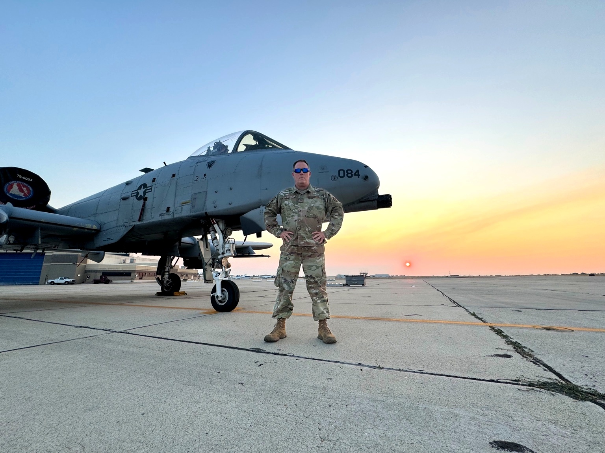
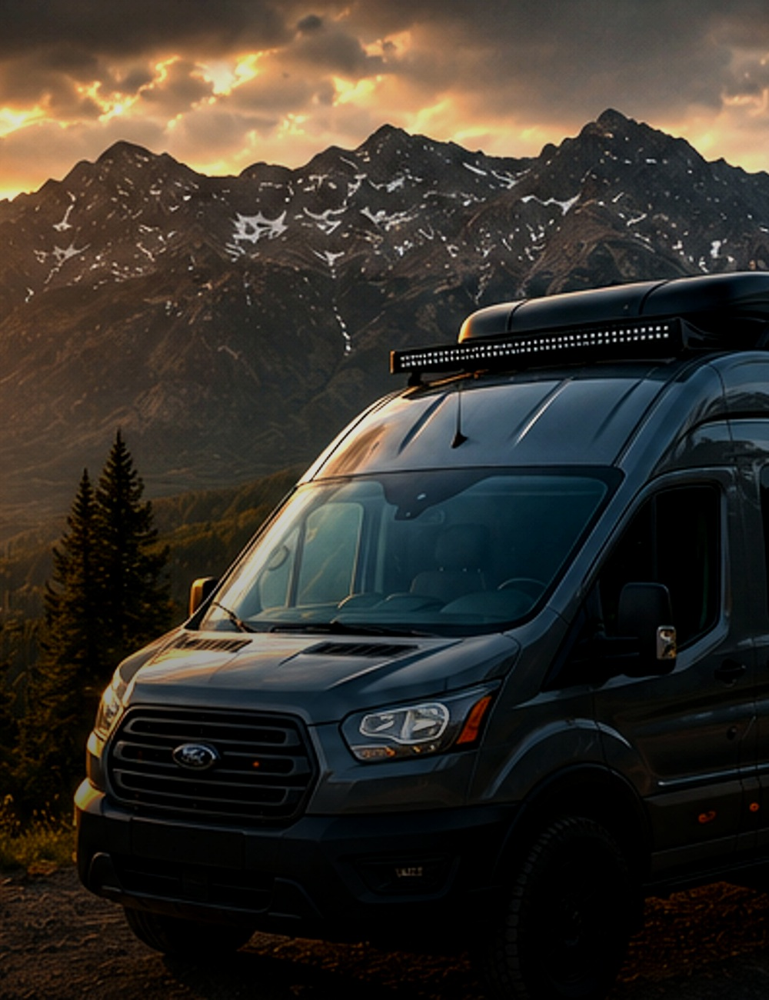
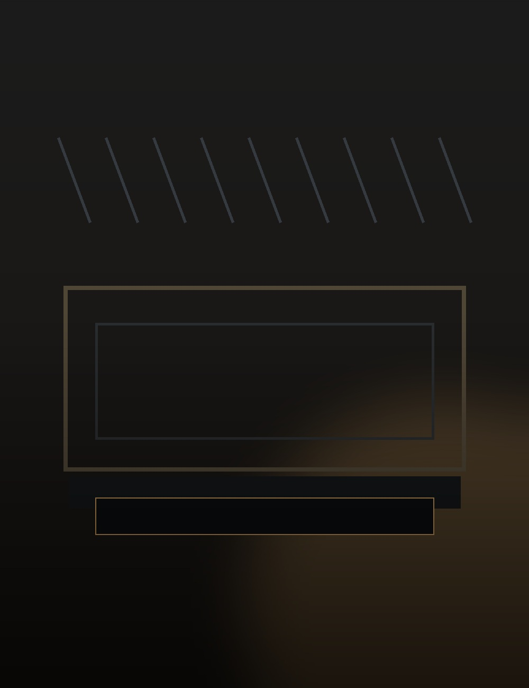
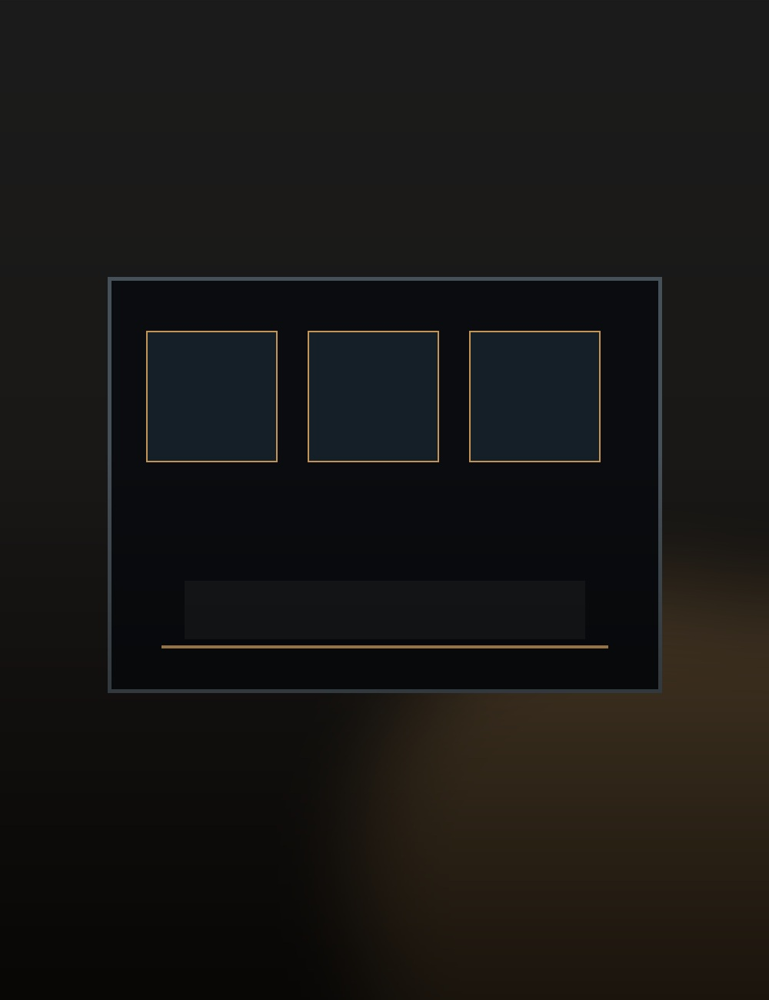
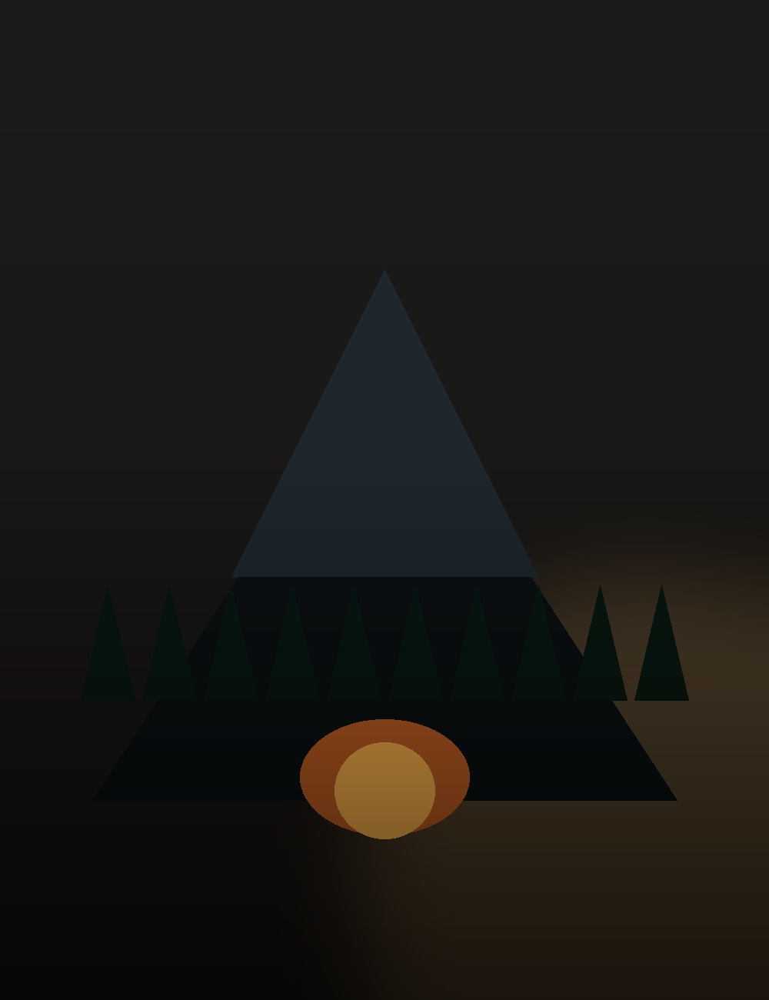
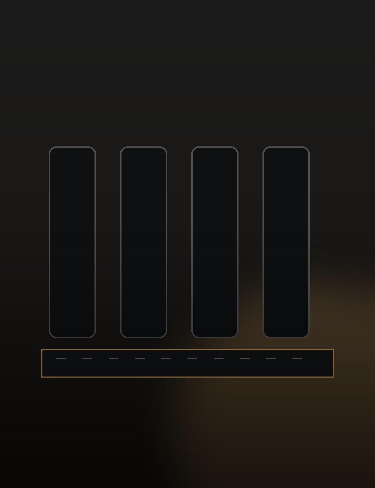

TDY Hangar
Build the workshop foundation: workbench, tools, filming space, and project storage.
Temporary Destination Yonder
A cinematic journey through craftsmanship, road travel, future van life, and the next mission.
Origin Story
Every journey has an origin. Long before TDY, cameras, woodworking, and mountain roads, there was the flightline. Maintaining the A-10 taught me discipline, precision, and pride — values that now guide every project, every build, and every mile traveled.

The Mission
TDY brings together the garage, the road, the camera, the tools, the story, and the next chapter of life.
Build the workshop foundation: workbench, tools, filming space, and project storage.
Create the command center for editing, planning, storytelling, and production.
Document the tools, camera gear, camping gear, and equipment used on every mission.
Prepare for the future Transit van, road trips, campsites, and national parks.
The Journey
Real trips. Real builds. Real life. Follow along as the journey continues.





TDY Hangar
The garage becomes the launch bay — the place where projects, tools, mistakes, fixes, and future missions are built.
Enter the Hangar →Mission Control
The command center for filming, editing, planning, website building, and managing the TDY brand.
Open Mission Control →Gear Locker
Tools, cameras, camping gear, electrical equipment, van gear, and everything used to build the TDY life.
DJI, iPhone, microphones, mounts, lighting, and storage.
Kreg jig, saws, clamps, tools, and TDY Hangar upgrades.
ASUS ROG, monitors, speakers, desk gear, and editing tools.
Camping, travel, power, storage, and future Transit van gear.
Mission Timeline